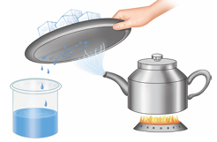

1. A.Melting |
B. Change of state from liquid to solid |
C. Ticking of clock |
2. A.Condensation |
B.Change of state from liquid to gas |
C.Formation of ice cube |
3. A.Evaporation |
B.Change of state from solid to liquid |
C.Collecting flowers |
4. A.Freezing |
B.Change of state from gas to liquid |
C.Ice cube to water |
5. A.Periodic change |
B.Occurs at irregular time intervals |
C.Water to steam |
6. A.Non periodic change |
B.Occurs at regular time intervals |
C.Steam to water drops |
A rough piece of wood is sanded and polished resulting in change in texture, Rusting of an iron nail, Painting the grill, Bending a paper clip, Pounding silver into thin plate, Rolling the chappathi dough into thin wire, Occurrence of day and night, eruption of volcano, burning of matchstick, dosa from the batter, blinking of eyelids, occurrence of a thunderstorm, rotation of the earth, formation of eclipses.
Table begins
Physical changes |
Chemical changes |
|
|
|
|
|
|
|
|
Table ends.
1. Physical Change is Boiling, Chemical Change is dash.
2. Wood to saw dust is dash, Wood to Ash is Chemical change
3. Forest fire is dash change, Change in period in a school is periodic change
1. State two examples of periodic changes.
2. Mention any two exothermic reactions.
3. Cold milk is heated and it becomes hot. Which type of change it is?
4. What type of change is artificial ripening of fruit?
5. What type of change is colouring of a paper?
6. Growing of nails is a periodic change. Why?
7. What type of energy changes is associated when ice melts?
1. Distinguish physical and chemical changes.
2. How can a change occur in a substance?
3. Can you suggest a method to collect water from sea water?
4. Is solar eclipse a periodic change? Give your reason.
5. What is the difference between dissolution of sugar and burning of sugar?
1. Explain the following statement, Digestion is a chemical change.
2. How the iron blade is fixed into a wooden handle in tools used to dig the soil?
1. Peeled and unpeeled banana does not look the same. Does that mean peeling banana is a chemical change?
2. A very hot glass on putting in cold water cracks. What does this change indicate?
3. Boiling of water is a physical change; but boiling of egg is a chemical change. Why?
1. Assertion: The explosion of fire cracker is a physical change.
Reason: A physical change is a reversible change.
a. Both Assertion and Reason are true and Reason is the correct explanation of Assertion.
b. Both Assertion and Reason are true but Reason is not the correct explanation of Assertion.
c. Assertion is true but Reason is false.
d. Assertion is false but Reason is true.
2. Assertion: The process of conversion of liquid water to its vapours by heating the liquid is called boiling.
Reason: The process of conversion of water vapours to liquid by cooling the vapours is called condensation.
a. Both Assertion and Reason are true and Reason is the correct explanation of Assertion.
b. Both Assertion and Reason are true but Reason is not the correct explanation of Assertion.
c. Assertion is true but Reason is false.
d. Assertion is false but Reason is true.
3. Assertion: Burning of wood log to charcoal is a physical change.
Reason: The products formed of burning a piece of wood can be easily converted back to wood log.
a. Both Assertion and Reason are true and Reason is the correct explanation of Assertion.
b. Both Assertion and Reason are true but Reason is not the correct explanation of Assertion.
c. Assertion is true but Reason is false.
d. Assertion is false but Reason is true.
4. Assertion: The formation of iron oxide from iron is a chemical change.
Reason: For the rust to form from iron, it must be exposed to air and water.
a. Both Assertion and Reason are true and Reason is the correct explanation of Assertion.
b. Both Assertion and Reason are true but Reason is not the correct explanation of Assertion.
c. Assertion is true but Reason is false.
d. Assertion is false but Reason is true.
5. Assertion: A drop of petrol when touched with finger gives a chill feeling.
Reason: The above phenomenon is an endothermic one.
a. Both Assertion and Reason are true and Reason is the correct explanation of Assertion.
b. Both Assertion and Reason are true but Reason is not the correct explanation of Assertion.
c. Assertion is true but Reason is false.
d. Assertion is false but Reason is true.
1. Observe the picture and list down the changes that are accompanied in the picture.
A. dash
b. dash
c. dash.
2. Observe the picture containing a kettle and note that it has salt water in it and answer the following questions

a) What is name of the process that is done to the kettle?
b) What will happen to the content of the kettle?
c) What kind of change is occurring on the cold surface of the metal plate?
d) What can you say about the quality of water that is obtained in the beaker?
CHANGES AROUND us
This activity helps the students to understand the effect of heat on matters.
PROCEDURE
Step 1, Type the URL link given below in the browser or scan the Q R code. A page opens with a glass full of ice with a play button near to it.
Step 2, Press Play button. It opens into another page with the set up of temperature and change of phases.
Step 3, Set the temperature and phases. Press the play button below.
Step 4, Do it with different options. Then a next page button will come
Step 5, Go there you will end with a small quiz.
Changes Around us URL
https://interactives.ck12.org/simulations/chemistry/phases-of matter/app/index.htmlm
Pictures are indicative only
If browser requires, allow Flash Player or Java Script to load the page.